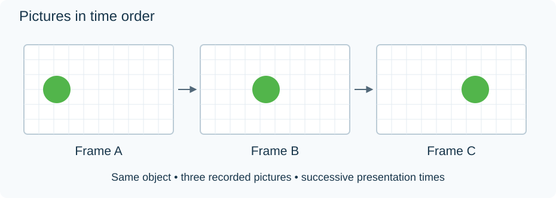

How Digital Video Represents Moving Pictures
A video is a sequence of pictures, called frames, together with information about when to show them. Each picture describes a grid of samples; displaying successive pictures at the intended times creates the appearance of motion.

An original schematic: three pictures of one moving object, shown in time order. The drawing simplifies the pixel grid and does not represent a particular video codec.
Three independent questions describe much of what you see in an Emby media information panel:
| Property | The question it answers | Example |
|---|---|---|
| Resolution | How many picture samples are there? | 1920 × 1080 |
| Frame rate | How many pictures arrive each second? | 24 frames/s |
| Compression | How are those pictures represented efficiently? | A compressed H.264 bitstream |
Increasing resolution does not increase the number of moments recorded. Increasing frame rate does not reveal detail that the camera never captured. Both can increase the work required to decode and display the video, but neither alone measures picture quality.
The file contains instructions, too
Most library videos do not store every pixel of every frame independently. A decoder reconstructs pictures from compressed data, using predictions and corrections. It also needs the stream's dimensions, color description, and timing information. The media container keeps that video track alongside other tracks, such as audio.
During Direct Play, the Emby app receives the original media and performs the required decoding. During video transcoding, Emby Server decodes the source and encodes a new video stream for the app. Either route must eventually produce pictures at the correct times.
This is why a recognizable file extension is only the beginning of a compatibility check. The contents of the video track determine what the decoder must understand.